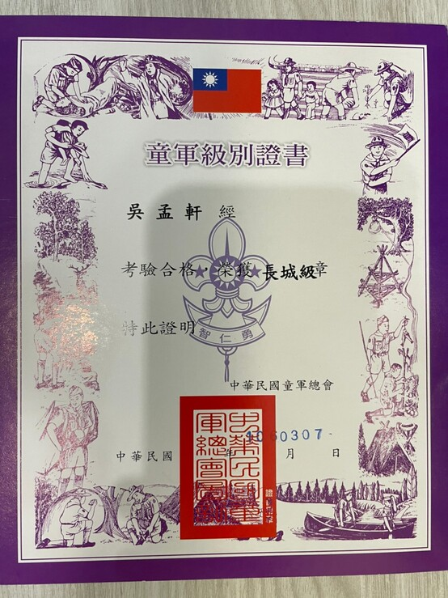
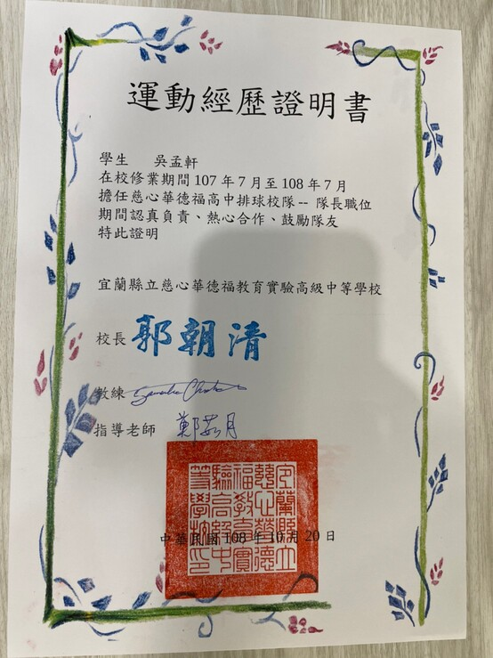
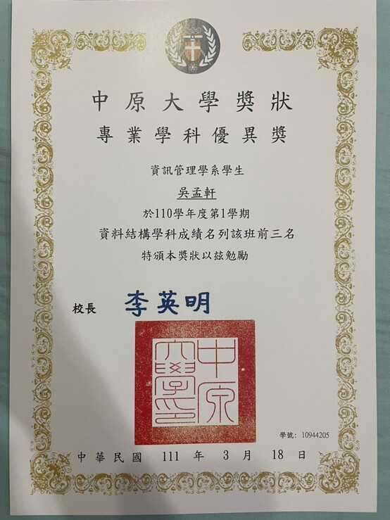

呉孟軒
ご もうけん
呉孟軒
|
96%
|
74%
|
87%
|
| 球類運動 | 日文 | 倉頡輸入法 | ||
| 球技 | 日本語 | 倉頡輸入法 |
國小國中 2008ー2017
慈心華德福高中附設國中小
從小在這個一直被大家誤認成私立森林小學的學校（我們是公立也不是森林小學），我在沒有什麼考試及作業壓力下無憂無慮地成長，童軍活動以及練習棒球是我假日的主要活動。
在童軍的領域，我在國小時獲得 優秀童軍獎章，國中時一路考到了童軍次高的等級長城級，也多次隨團參加考驗營等活動。
自加入棒球隊開始，週週都有練球，或著是跟隨球隊南征北討，國小時加入球隊三週便升上一軍並成為先發，國中二年級至畢業為止都擔任球隊隊長，曾經在一場比賽投出四局的無安打比賽，未曾拿下過比賽冠軍是自己比較遺憾的地方。

高中 2017ー2020
慈心華德福高中
高中在自己考量後決定繼續在同一個教育體系中學習，經歴了社會服務、職業實習、畢業專題等課程，也參加過學生會擔任財務。
高二時學校成立了排球隊，我也成為了創隊的第一批隊員，高二時擔任隊長，也同時是舉球員的角色，高三時球隊首次參加乙組聯賽就以縣第二名 的成績進入複賽。
的成績進入複賽。
在高中三年内我也三度隨老師出國，三週的澳洲當地生活讓我對自己的英語對話有了自信，也更加的獨立自主；到歐洲參加青年大會同時以單車代歩讓我開了眼界；和排球隊一同前往日本和當地學校球隊共同集訓，除了見識不同的球隊文化外也結識了一些好友。

大學 2020ー現在
中原大學
透過繁星制度，我來到了中原資管系，當初選擇這裡的主要理由應該是，這裡距離我所喜歡的職棒球隊主場近（誤），由於過去身在不以考試升學為重點的體制，我也很好奇自己能否適應這樣子的環境。
至於我在這裡過得如何又做了些什麼事，繼續往後看看其它頁面的内容就能知道了。


|
企業概論ーincafe |
網路程式設計ー衛氏巫師法寶店 |
Android程式設計ーCYCU FOOD |
|
大一下學期的企業概論是我們進入資管系的第一個小組專案，我在組中擔任資訊長的角色，負責架設網站及影片製作等工作，由於大家時間經常對不上，不論清晨還是半夜都可能是我們開會的時間。 雖然我們抽到的商品是根據過去所知較難銷出的産品，並且還有疫情來攪局打亂了許多預定的計劃，但在組員共同的努力下我們依然取得了不錯的盈收，這次和組員的合作經驗是愉快的，整體來説對於這個專案也是蠻滿意的。 |
雖然團隊早在暑假時就組成，但實際合作的精華基本上都在學期的最後兩週，兩位甲班負責前端的同學在程式方面皆是非常優秀的，我也不希望前後端完成度出現極大落差，於是我和同班的組員在元旦連假廢寢忘食地打程式，連續一週的工作也讓我得了感冒。 即使這個專案很耗體力及精神，但毎當成功做出一個功能時就會非常有成就感，幇助到其他同學時也讓我很高興，大家聚在一起努力的畫面更是難忘。 |
大二上選修課程的期末專案，以新生為面向開發一個軟體，我們這組選擇做一個推薦中原周遭美食的App。 我主要在這次專案負責處理整個程式的架構及測試，也額外自己學習了老師未教的内容並實際應用在其中，老師可以做為知識的引路人，但有更多的東西需要自己去學習去探索，才會讓這些知識更進一成為歩自己的東西。 |
康芬老師的教學小天地
在甲班同學的邀請下，我們一同承接了通識中心老師的案子，網頁主題是以老師他個人的教學成果為主，是使用一般人都能容易上手的Wix來製作，在此之前我雖然已經使用這個程式一段時間了，但首次接案仍以學習的態度來面對。這個網站我頁責整個網頁架構的設計以及掌控進度，美編設計的部分則交給甲班的同學，主要工作已經在2021年暑假完成，之後也會繼續負責更新和維護的工作。（註：本網站僅供會員瀏覽）
全球客家中心
和上一個網站是由同一個老師發出的案子，但不同的是其預計的受衆會更廣一些，分工上和上個網站差不多，不過進度掌控就換甲班的同學負責，在過程中也曾受到商設系老師的指教，在製作這些網頁的過程也讓我探索到更多以前沒使用過的功能，同時接案也讓自己的責任感有所提升，雖然不是很大的案子但也是很好的經驗。目前預計今年内還會再從老師那接一個新的案子，也期許自己能從中學到更多事情。

軟式棒球社
背番号:8到大二偶然在社團博覽會才發現學校有軟式棒球社，喜愛棒球的我二話不説馬上就加入了，在練習中慢慢地找回了過去的手感，並且持續用自身速度的優勢在場上奔馳著，和一群棒球癡一起揮灑汗水，而我也將接任下一屆的教學長，一邊提升自己也同時協助練球進行。
位置：投手、内野手、外野手
資管系男籃
背番号:46原本對於籃球都只有下課打打的程度，上大學後才決定要加入系籃，新生盃我們拿下了第四名的成績，由於同時也參加排球系隊，所以到今年寒假我才首次參加對外比賽，目前自認對籃球的觀念、基本動作等都還不熟悉，還得繼續努力才能找到自己在球隊的定位。
位置：得分後衛、小前鋒
資管系男排
背番号:9雖然原先沒有意願,但由於高中時是排球隊而被室友拉去打新生盃，在重新拾回對排球的熱情後選擇正式加入系排，也取得了先發的位置，大一起對外比賽場場打滿，也首次更改位置去做主攻手，在寒訓的一週内練起高中從未有過的扣球，升上大二也擔任球隊的副隊長。
位置：主攻手、舉球員
|
第33屆系學會執行秘書 在會長三番兩次的詢問（因為找不到人了）之下，我成為第33屆系學會的執秘，在系學會例行會議上主要負責統整會議記録，在會長需要時協助工作，也是新生聯絡的一個窗口，雖然因為疫情，原先預計要擔任總協的活動取消了，但在任期内也一邊觀摩學習到系學會内部的運作方式。此外也在今年獲得績優貢獻獎，而大三我將卸下系學會的工作轉當資管系的學生議員代表，從其它方面繼續為系上做事。 |
|
||
|
110學年度新生體驗營導生 在暑假開始沒多久我就迎來了接任執秘後的第一個工作，為了讓新生能更快適應大學的校園生活，學校舉行了為期兩天的新生體驗營，不過這次由於疫情的關係而首次在線上進行，也因此身為導生的我們要完全掌握整個活動流程的進行，整個暑假都不時會有新的資訊要吸收並公告給新生，很謝謝新生在整個過程的配合讓活動得以順利進行，也特別感謝被我抓來一起當導生的好同伴，這次的經驗讓我學會當一個決策者，也因為新生各式的問題而增強了應對問題的能力。 |
|||
|
新生茶會 雖然原訂在暑假要舉行的茶會因疫情取消，但在開學後一段時間有趨緩的傾向，於是會長號召兩位副會長和我們執秘一同臨時籌劃這次的新生茶會，從時間協調到活動文案，也首次下場擔任隊輔，雖然都不是我所擅長的事，也或許還有很多能改進的地方，但總之完整經歴了這個過程就是好事一件。 |
系友回娘家主持人 同樣的在疫情的影響下，資管系史上首次在線上進行系友回娘家的活動（據説也是這年唯一仍舉行回娘家活的的系所），我也第一次擔當活動主持人，在有新生體驗營導生的經驗後，對於線上活動的流程掌握也變得熟悉，並且在系助完善的安排下做了幾次的彩排，並討論修改相關内容流程，活動當日雖然設備有突發状況，但在解決後仍在抽獎的歡樂氣氛下結束，是很特別的一次體驗。 |
||
|
資管之夜ー諸神資戰活動組 資管之夜是資管系傳統的大型活動，但大一時我在班上僅負責道具製作，並沒有太大的參與感，這次在兩位總協的號召下加入了系學會的示範組，因為練習總是在半夜，隔日還有系隊晨練的我在那段時間經常連續三十個小時以上沒有睡覺，這次做為一個龍套的角色，在跳舞方面有嚴重肢體障礙、不擅長在衆人面前説話的我，跳了兩支舞並做了幾個串場的主持，許多的第一次也代表了我自己的突破，或許不完美，但卻値得回味。 |
|||
109ー2 專業學科優異獎 Java |
110ー1 書卷獎 |
 JLPT N4合格證書 |
110ー1 專業學科優異獎 統計學 |
110ー1 專業學科優異獎 資料結構 |
JLPT N3合格證書 |
回上方